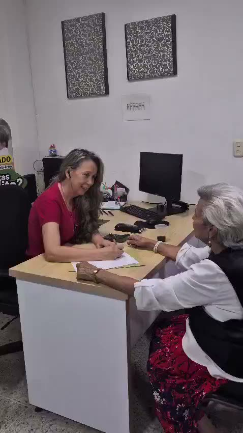

Libranza para pensionados
Colpensiones, FOPEP, Fiduprevisora, CASUR, CREMIL y otras pagadurías compatibles.
Somos especialistas en crédito por libranza para pensionados, docentes del estado, empleados del gobierno y Fuerza Pública. Analizamos tu caso con calma y te decimos la verdad: si no te conviene, también te lo decimos.
La aprobación final la define la entidad. Aquí te ayudamos a decidir con calma.
Nos especializamos en el crédito por libranza del sector público. Conocemos tu pagaduría, tus descuentos y tu realidad.
Colpensiones, FOPEP, Fiduprevisora, CASUR, CREMIL y otras pagadurías compatibles.
Vinculados a las Secretarías de Educación municipales, distritales y departamentales.
Alcaldías, gobernaciones, ministerios, Rama Judicial, DIAN, ICBF y más entidades.
Policía, Ejército, Armada y Fuerza Aérea, en actividad o pensionados.
No prometemos montos ni tasas. Estudiamos tu perfil y tu pagaduría, y te explicamos qué opción realmente te conviene.
Financiación con descuento por nómina o pensión, según tu capacidad y las políticas de cada entidad.
Liquidez para lo que necesites, comparando siempre plazo, costo total y cuota antes de avanzar.
Unir deudas puede ayudar… o no. Revisamos si de verdad mejoras después de costos y plazo.
Ajustar o aumentar un crédito solo tiene sentido si mejora tu situación, no si la empeora.
Estar reportado no siempre cierra las puertas. Revisamos tu caso; nunca prometemos un resultado.
¿Ya te ofrecieron algo? Lo revisamos contigo y te decimos si realmente vale la pena firmar.
Damos claridad para que tú tomes la mejor decisión. Estos son los pasos, sin sorpresas.
Nos cuentas tu situación por WhatsApp. Sin formularios largos ni datos sensibles en frío.
Revisamos tu perfil y tu pagaduría sin costo. Cuando corresponda, te pedimos un desprendible legible.
Te mostramos costos, plazo y consecuencias. Si te conviene, avanzamos; si no, también te lo decimos.
Si decides continuar, gestionamos con la entidad y te acompañamos hasta el final.
Pensionados y empleados del gobierno de Cúcuta y de todo Norte de Santander que tramitaron su crédito de libranza con nosotros y hoy respiran tranquilos. Fotos y videos tomados en nuestra oficina, con su permiso.



Publicamos consejos claros, casos reales y todo lo que deberías revisar antes de firmar un crédito. Contenido pensado para pensionados y empleados del gobierno.
No competimos por la tasa más baja ni por el desembolso más rápido. Lideramos algo más importante: decisiones financieras conscientes.
Quiero que revisen mi casoUn crédito no se mide solo por la cuota, sino por lo que realmente te deja al final.
A veces la mejor decisión es no tomar uno nuevo. Lo revisamos contigo con calma.
Una cuota más baja no siempre significa un crédito mejor si te alarga la deuda.
Miramos plazo, costo total y descuentos antes de que tomes una decisión.
En CrediAyudarte te damos claridad para que tomes la mejor decisión. Si no te conviene, también te lo decimos.
Reunimos las preguntas más frecuentes. Léelas con calma, están organizadas por páginas.
No. Somos una asesoría financiera independiente. No somos un banco ni desembolsamos dinero: analizamos tu caso, identificamos entidades con opciones compatibles con tu perfil y pagaduría, y te acompañamos. La aprobación final siempre la define la entidad.
El preanálisis se hace sin costo y sin compromiso. Si una gestión tuviera costos u honorarios, te los explicamos con claridad antes de que decidas avanzar.
Nunca. No pedimos anticipos, seguros anticipados ni pagos que condicionen un desembolso. Si alguien lo hace en nuestro nombre, desconfía y avísanos.
No. Nadie serio puede garantizarte una aprobación. La decisión depende de tu perfil, pagaduría, capacidad, reporte y las políticas de cada entidad. Te decimos con honestidad qué tan viable se ve tu caso.
En muchos casos sí, pero depende de tu perfil, tu pagaduría, el tipo de reporte y las políticas de la entidad. Revisamos tu caso con honestidad; lo que nunca hacemos es prometerte un resultado que no está asegurado.
Es un crédito cuya cuota se descuenta directamente de tu nómina o pensión. Suele tener condiciones más ordenadas, pero igual conviene revisar plazo, costo total y descuentos antes de decidir.
Para pensionados, docentes del estado, empleados del gobierno y miembros de la Fuerza Pública. Es el sector que conocemos a fondo y donde podemos orientarte mejor.
Solo lo necesario para orientarte, como tu pagaduría o entidad y tu situación general. No pedimos número de cédula, fecha de nacimiento, cuentas bancarias ni claves en el primer contacto.
Sí. Pedimos solo lo indispensable y no compartimos tu información con terceros ajenos al proceso. Los datos sensibles, si algún día se requieren, los gestiona el equipo humano en el momento adecuado.
No siempre. Puede ser útil, pero también puede alargar la deuda o subir el costo total. Por eso la comparamos contra otras opciones: plazo, costo total, liquidez real y cuota.
Depende de la entidad, tu pagaduría, los documentos y las validaciones. Por eso no manejamos tiempos como promesa. Te contamos de forma realista en qué va tu caso.
La pagaduría es la entidad que te paga la pensión o la nómina. Es clave porque define qué opciones y qué entidades son compatibles con tu perfil.
Es tu comprobante de pago de pensión o nómina. Cuando corresponda, te pediremos una foto o PDF legible para revisar tu caso con precisión. Solo lo pedimos en el momento adecuado.
Algunos casos con embargo tienen opciones, pero requieren revisión con restricciones, especialmente los embargos de alimentos o familia. No prometemos resultado; lo revisamos con honestidad.
A veces sí, pero recuerda: una cuota más baja no siempre es un mejor crédito si te agregan años de deuda. Revisamos si realmente te deja mejor después de costos y plazo.
Te ayudamos a mirar el panorama completo: cuota, plazo, costo total y descuentos. Lo importante no es solo cuánto recibes, sino cuánto pagas y por cuánto tiempo.
Tenemos oficina en Cúcuta y atendemos a todo el país de forma virtual por WhatsApp. Si estás en otra ciudad, te atendemos virtualmente. Escríbenos y coordinamos.
No es obligatorio. La mayor parte de la atención es virtual por WhatsApp. Si estás en Cúcuta y prefieres, podemos coordinar atención presencial.
Nuestro foco es el sector público. Si es tu caso, te orientamos de forma transparente y, cuando aplica, revisamos si un familiar pensionado o empleado del gobierno puede ser el titular.
Te orientamos, entendemos tu perfil y, cuando corresponde, hacemos el preanálisis. Con eso te decimos si vale la pena avanzar o si es mejor no hacerlo porque no te conviene.
Lo primero es consultar tu historial en las centrales de riesgo (Datacrédito y TransUnion): ahí ves quién te reportó, por qué monto y desde cuándo. A veces el reporte ya no corresponde a la realidad: la deuda se pagó, el descuento sí se hizo por nómina pero la entidad no lo aplicó, o hay un error de reporte. Escríbenos y lo revisamos contigo con calma. Lo que nunca vamos a hacer es prometerte que te borramos un reporte: eso no lo hace nadie serio.
Cada entidad tiene sus propias políticas, así que no existe una lista única que valga para todos. En general se parte de tu documento de identidad, de un desprendible de pago legible y de que tu pagaduría tenga convenio con la entidad. A partir de ahí pesan tu edad, tu capacidad de descuento y tu reporte. Antes de pedirte documentos revisamos si tu caso tiene sentido; si no lo tiene, te lo decimos y te ahorramos el trámite.
Sí. Acompañamos a docentes vinculados a las Secretarías de Educación municipales, distritales y departamentales, incluidos quienes reciben su pago a través de Fiduprevisora. Revisamos tu vinculación, tus descuentos actuales y qué entidades tienen convenio con tu pagaduría. Si ya tienes libranzas activas, miramos si de verdad te queda espacio o si es mejor esperar; si no te conviene, también te lo decimos.
Sí. Atendemos a personal de Policía, Ejército, Armada y Fuerza Aérea, tanto en actividad como pensionados, incluidas pagadurías como CASUR y CREMIL. Como en cualquier otro caso, primero miramos tu perfil y tus descuentos, y te explicamos el costo real antes de que firmes nada. No prometemos aprobaciones: esa decisión siempre es de la entidad.
Sí. Nuestra oficina está en Cúcuta, pero atendemos de forma virtual por WhatsApp a personas de Villa del Rosario, Los Patios, Pamplona, Ocaña y del resto de Norte de Santander, y también del resto del país. No necesitas desplazarte: todo el acompañamiento puede hacerse por WhatsApp y, si prefieres venir a la oficina, coordinamos la visita.
¿Te quedó alguna duda? Mira cómo funciona el crédito de libranza paso a paso, lee los testimonios de pensionados atendidos en nuestra oficina de Cúcuta o pasa directo a solicitar tu crédito por libranza sin anticipos.
Sin compromiso y sin costo por el preanálisis. Te orientamos con la verdad.
Escríbenos por WhatsApp o déjanos tus datos. Te orientamos con calma, sin presión y sin costo por el preanálisis.
Completa un formulario corto y te contactamos por WhatsApp con la mejor opción según tu perfil.
Empezar solicitudNo cobramos por adelantado. Al escribirnos podrás autorizar el tratamiento de tus datos solo para orientarte.